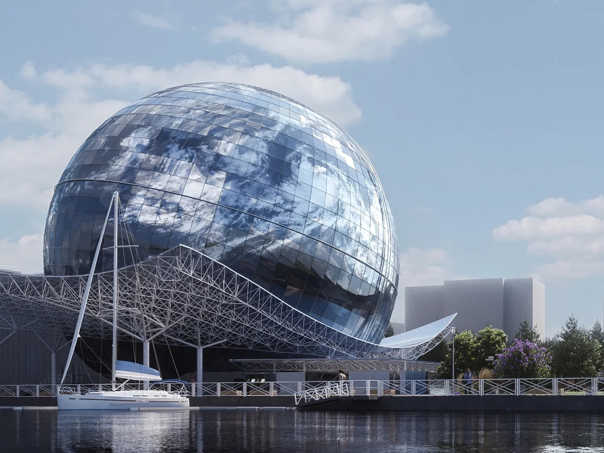

Inv. 01
Planet Ocean
The largest museum project I have worked on. I owned the technical architecture for the exhibition's Unity installations and built the shared interaction framework the whole team worked against — so that the Unity exhibits behave consistently and seven developers could build them in parallel without stepping on each other. Touchscreen kiosks with games built into them, simulators, and installations wired into custom hardware.
Several floors have not opened to the public yet, and some of the project's most demanding exhibits are there. I can walk through them in detail once they are public.
Exhibition design: Metaforma Museum Bureau · Unity development: Ilya Voitov
Project page by Metaforma